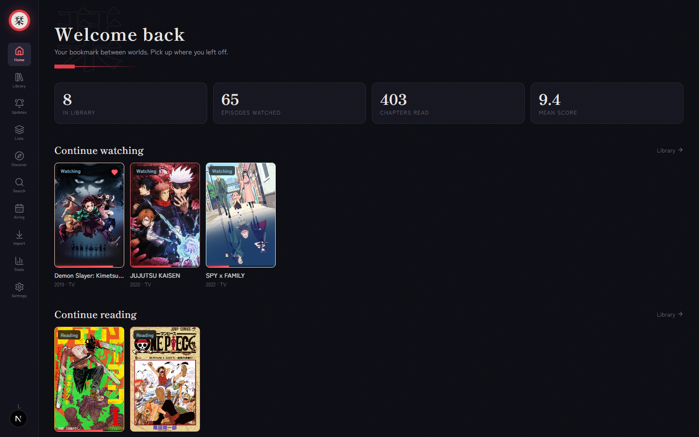

Install Shiori
A local-first tracker for everything you watch and read. Add it to your desktop or your phone and open it like any other app. No sign-up, no server, no tracking. Your library stays on your own device.
The one-tap install button lives on Shiori's own Settings page, since installing only works from the app itself.

Desktop
Windows, macOS, or Linux, in Chrome or Edge.
- 1Open Shiori in Chrome or Edge.
- 2Go to Settings and use the install button, or click the install icon in the address bar.
- 3Confirm. Shiori opens in its own window from your dock or start menu.
Mobile
Android or iPhone, straight from the browser.
Android (Chrome)
- 1Open Shiori in Chrome and go to Settings.
- 2Use the install button there, or open Chrome's menu and choose "Add to Home screen".
- 3Confirm. Shiori opens full screen, like a native app.
iPhone (Safari)
- 1Open Shiori in Safari.
- 2Tap the Share icon, then "Add to Home Screen".
- 3Confirm. It opens without Safari's toolbar, like a native app.
Nothing showing up anywhere, not even "Add to Home screen" in your browser's menu? That's your phone or browser blocking app installs, not a problem with Shiori. It varies by device: try updating your browser, turning off Data Saver or Lite mode, or checking for a shortcut/autostart permission for it in your phone's app settings (common on Xiaomi, Oppo and Vivo phones).
What you get
The same shelf, whichever way you open it.
Import
Pull in your lists from AniList, MyAnimeList, Kitsu, or a Mihon backup file.
Library
Grid or list view, status filters, sorting, quick progress, and favorites.
Stats
Totals, score distribution, genre breakdowns, and an activity heatmap.
Custom lists
Curated shelves, plus smart lists that update themselves from filters.
Updates feed
Tracks new chapters for what you're reading, with one-click catch-up.
Discover
This season's airing anime and what's trending, added to your shelf in a tap.
Airing calendar
Day-by-day air times with countdowns for what's in your library.
Six themes
From a dark vermillion default to a warm paper look and a pastel palette.